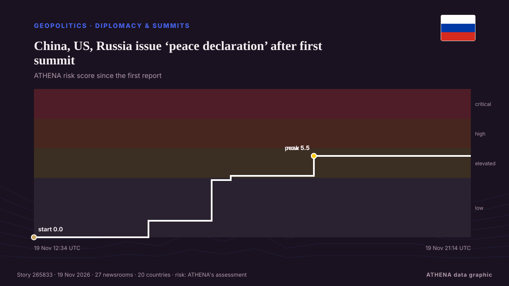

ATHENA Glaux Intelligence — Global news intelligence — every number explained
Every headline, checked across countries.
ATHENA Glaux reads 635 news outlets worldwide. A story becomes a verified event only when independent outlets report it. Each event shows who was first and a risk score with its reasons.
Reports drift in from independent outlets - when two meet on the same story, it becomes a verified event.
How ATHENA checks a story
- CollectReports arrive from independent outlets in many countries.
- MatchWhen two outlets meet on the same story, it becomes a verified event.
- ExplainEach event shows who was first, how far it spread and why the risk is what it is.

GeopoliticsChina, US, Russia issue ‘peace declaration’ after first summit
China, the United States and Russia issued a "peace declaration" Thursday following an unprecedented leaders' summit of Trump Xi and Putin. from Vanguard
GTA 6 Review: Grand Theft Auto VI is staggering in scale but still grounded in reality
Grand Theft Auto VI is so vast in scale, it has rewritten the rules for what a game can be. from The Scotsman
Gibson Dunn Wins $6.5B Global Freezing Injunction for Binance in Abu Dhabi Court After Crypto Heist
The order is among the first legal steps taken after the record-setting theft of crypto assets from Binance. from Law.com

Ships at the world's chokepoints now
Live AIS counts. Tap or hover a bar for the detail.
Robert Pattinson’s James Bond Casting Causes Some 007 Fan Backlash
A look at reactions to previous James Bond casting announcements, similarities to Batman casting backlash, and what it means for Robert Pattinson as the new 007. from Forbes Business
Xi meets Trump in China's Shenzhen
On Thursday evening November the 19th in Shenzhen, Trump, Xi and Putin will sit in the same room for the first time. from FXStreet
Prince Harry: I’d rejoin the military to fight Russia
Prince Harry spoke exclusively to The Telegraph's Ukraine: The Latest podcast during an unannounced visit to Lviv. from Business Insider
Geopolitics, Politics & Security
More ›US, China can help end Ukraine war, Trump tells Xi before trilateral with Putin
By Jarrett Renshaw and Trevor Hunnicutt SHENZHEN, China, Nov 19 (Reuters) - US President Donald Trump told his Chinese counterpart Xi Jinping on Thursday that they should both help end the war in… from Al-Monitor
- Elections & politics
Spanish PM seeks election boost as Brazil's Lula visits
- Elections & politics
US Democrats flip Alaska Senate seat as Mary Peltola wins race
- Diplomacy & summits
China's Xi calls for a world free of nuclear weapons in meeting with Trump, Putin
- Elections & politics
With new speaker, Israel parliament moves to unravel Netanyahu legacy
Economics, Finance & Markets
More ›Anthropic tops SpaceX with record $2 trillion Nasdaq debut
As the first frontier AI company to go public, Anthropic is poised to become the sector's benchmark. from SABC News
- Forecasts & recession risk
Islam forecast to exceed Christianity as world's biggest religion by middle of next decade
- Stocks, bonds & markets
Anthropic begins trading as $1.5 trillion company in biggest IPO on record
- Inflation & interest rates
BI assures rate hike will not derail Indonesia economic growth
- Stocks, bonds & markets
Anthropic to smash IPO records with £1.13trn valuation
Trade, Industry & Infrastructure
More ›A third Ukrainian strike in 4 days halts rail traffic on Russia's Kerch Bridge to Crimea
The Kerch Bridge is a key artery for military and civilian supplies to Crimea, which Moscow seized in defiance of international law in 2014. from Stuff
- Construction & infrastructure
Mitsotakis Signals Possible Restrictions on New Building on ‘Iconic’ Greek Islands
- Shipping & ports
Steer Acquires Mercator International
- Construction & infrastructure
Ukraine launches another strike on Crimean Bridge
- Construction & infrastructure
Waymo pulls driverless taxis from freeways after California ban
Energy, Resources & Environment
More ›Mideast crisis ‘largest threat’ to energy security ever: IEA
The crisis in the Middle East sparked in February by the US and Israeli bombing of Iran has created the "largest threat" to energy security in history, the International Energy Age... from Oman Observer
- Critical minerals
US-led consortium wins Kenya’s Mrima Hill mineral tender
- Energy security
Orlen spreads its wings across Central and Eastern Europe with new gas pacts
- Oil & gas
EnQuest Sells UK North Sea Assets to NEO NEXT+ in $960M Deal
- Climate & climate policy
COP31 draft climate deal removes mention of fossil fuels
Technology, AI & Cybersecurity
More ›Potatoes grown in simulated lunar soil match Earth-grown performance
Researchers have shown that potatoes grown in simulated lunar soil amended with organic matter are safe to eat and can achieve growth and yields comparable to those produced on Earth. from Phys.org
- Space & satellites
NASA’s Voyager 1 is an awe-inspiring one light-day away from Earth
- Artificial intelligence
A cyberattack using artificial intelligence targeted the EU in October, official says
- Chips & computing
On Nvidia scandal, Trump says US spies on China too and is ‘better’ at it
- Space & satellites
Musk accuses Ukraine’s Zelensky of lying about Starlink
Business, Companies & Investment
More ›US firms line up investment proposals as DFC delegation plans Bangladesh visit in January
Restored financing eligibility after 13 years could unlock US investment in energy, infrastructure and manufacturing. from The Business Standard (Bangladesh) (working feed)
- Corporate strategy
APEC live: China releases leaders' statement after its disappearance from APEC website
- Corporate strategy
Google ‘rejects Government’s request to remove Russell Brand video from YouTube’
- Corporate strategy
GTA 6 launches after 13-year wait, breaking pre-order records
- Investment & capex
Vietnam's Ministry of Industry and Trade to support Global Energy Exhibition & Congress Vietnam in 2027
Accidents & emergencies
More ›Bayesian crew unaware of safety risk before deadly sinking, British report finds
Billionaire entrepreneur Mr Lynch, 59, and his daughter Hannah, 18, were among seven people who died. from The Irish News (Belfast)
- Accidents & emergencies
Doctors amputate weightlifter Hafizuddin's right arm after crash
- Accidents & emergencies
M5 blocked near Clevedon as police respond to incident
- Accidents & emergencies
US Central Command denies reports of personnel injured in Iranian attacks
- Accidents & emergencies
As Merger Reports Emerge, Cahill Loses Digital Infrastructure Finance Head to Latham
Three ways to read today
Start with the one that fits your timeVerified events
Ranked by how widely they are reported
- Arm CEO Haas approached by Nvidia board’s recruitment firm to replace Jensen Huang143 outlets · 46 countriesRisk 4.3
- Oil tanker comes under missile attack in Strait of Hormuz102 outlets · 39 countriesRisk 4.2
- Trump wraps up Asia trip without meeting N. Korean leader following widespread speculation73 outlets · 33 countriesRisk 3.6
- Who is Hakeem Jeffries, the Democrat nominated to become the first Black US House Speaker41 outlets · 23 countriesRisk 1.7
- Hegseth, in Caracas, announces US-Venezuela military partnership agreement30 outlets · 22 countriesRisk 4.2
Analysis Desk
Ask a question and read a reasoned assessment of a leading story, with what would prove it wrong.
Open the Analysis Desk ›Today in numbers
| 20:00 | 445 |
|---|---|
| 21:00 | 433 |
| 22:00 | 545 |
| 23:00 | 605 |
| 00:00 | 517 |
| 01:00 | 471 |
| 02:00 | 407 |
| 03:00 | 319 |
| 04:00 | 439 |
| 05:00 | 644 |
| 06:00 | 546 |
| 07:00 | 559 |
| 08:00 | 526 |
| 09:00 | 406 |
| 10:00 | 532 |
| 11:00 | 418 |
| 12:00 | 499 |
| 13:00 | 625 |
| 14:00 | 658 |
| 15:00 | 665 |
| 16:00 | 497 |
| 17:00 | 554 |
| 18:00 | 578 |
| 19:00 | 517 |
Risk of today's events
Emerging signals
- Sudden surge · Active nowDealBook Summit
- Sudden surge · Active nowLow-frequency, high-impact events
- Sudden surge · Active nowRohingya
- Sudden surge · Active nowMyanmar
- Sudden surge · Active nowDonald Trump and Xi Jinping
Stay informed
ATHENA Weekly Risk Picture
The week's biggest geopolitical, economic and shipping risks, cross-checked and scored.
Every Friday at 08:00 Athens time · free · in English
Subscribe freeATHENA on Telegram
News the moment it is published: breaking events at risk 6 or more, an hourly round-up, risk-tracker updates and the daily briefing at 10:00.
Free · posts in English · leave at any time
Join the channelSign-up is handled by beehiiv with double opt-in: nothing you type is sent to ATHENA, and every issue has an unsubscribe link.
Risk trackers
More ›Global risk outlook — week 47, 2026 (16–22 Nov) ›